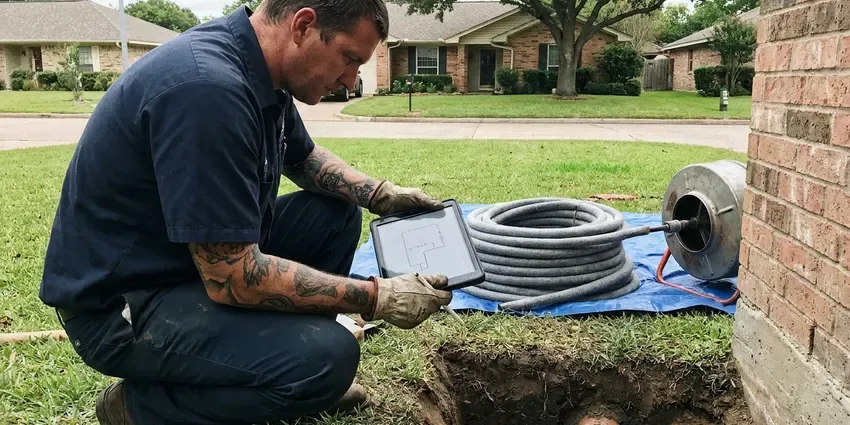

Well Pump Repair in North Little Rock, AR
DGR Plumbing offers comprehensive well pump repair services across North Little Rock, AR, addressing everything from motor failures to pressure tank issues with precision.
- Priority No-Water Response
- Accurate Well Pump Diagnostics
- Quality Part Replacement
- Warrantied Workmanship

Reliable well pump repair that restores pressure in North Little Rock, AR.
Call now and we will troubleshoot your pump, tank and controls as quickly as possible.
Well Pump Repair in North Little Rock, AR for Submersible Pumps, Tanks and Controls
DGR Plumbing focuses on all aspects of well pump repair, understanding that a malfunctioning well pump can bring your home's water supply to a halt. We promptly identify the root cause, whether it's electrical problems, pressure switch failures, or worn-out pump components.
Our expertise includes:
- Pressure Tank and Switch Adjustments
- Submersible pump and motor pulling, testing and replacement
- Pressure switch, control box and capacitor testing and replacement

Additional Plumbing Repair Services in North Little Rock, AR
We offer expert plumbing repair services across North Little Rock, AR to fix leaks, restore flow, and keep your system running smoothly.


Customers
Why Choose DGR Plumbing for Well Pump Repair in North Little Rock, AR?
Choosing the right professionals for your well pump repair is crucial for long-term reliability. We bring local expertise and a deep understanding of well systems common in Arkansas.
- Transparent Pricing, You'll receive a clear, upfront estimate before any work begins, with no hidden fees.
- Genuine Parts, We use only high-quality, durable replacement parts to ensure the longevity of your well pump repair.
- Systematic Testing, We check power, controls, tank and pump in order before pulling anything from the well.
Citywide Coverage
DGR Plumbing is proud to serve every neighborhood and surrounding area of North Little Rock for well pump repair. Whether you're in a newly developed subdivision or a more established rural property, our team is familiar with the varied well system installations across the region. We focus on fast response times to minimize any disruption to your water supply.
Experienced Team
Our team of plumbers at DGR Plumbing boasts extensive experience specifically with well pump repair. They have encountered and successfully resolved every type of well pump issue imaginable, from simple pressure switch adjustments to complex submersible pump replacements. This deep expertise ensures accurate diagnosis and effective, lasting repairs for your system.
Safety-First Approach
We disinfect the well after pulling a pump to reduce bacteria introduced during the work. The well cap and seal are restored so insects and surface water stay out.
Trusted Certified North Little Rock Plumbing Services Professionals
At DGR Plumbing, we take pride in providing licensed, certified plumbing services throughout North Little Rock, AR. Backed by leading industry credentials, our experienced plumbers combine technical skill with genuine customer care. Whether it is repair, installation, or maintenance, we follow strict safety and quality standards to deliver lasting results you can trust.
Call Us Now PHCC Plumbing Contractor Recognition
PHCC Plumbing Contractor Recognition Better Business Bureau (BBB) Accreditation
Better Business Bureau (BBB) Accreditation Angi Certified Pro
Angi Certified Pro ISO 9001 Quality Management Certification
ISO 9001 Quality Management CertificationExpert Well Pump Repair Services in North Little Rock, AR
Constant Pressure System Repair in North Little Rock, AR
Variable speed systems like the Grundfos SQE and Franklin SubDrive keep pressure steady by adjusting motor speed. When they fault out, the drive usually shows a code that guides diagnosis. We troubleshoot drives, sensors and wiring and repair or replace components. These systems need a smaller pressure tank but careful setup.

Jet Pump Repair in North Little Rock, AR
Jet pumps, typically installed above ground, are often used for shallower wells or as booster pumps. Common issues include loss of prime, seal leaks, or motor wear. We troubleshoot problems like air in the lines, clogged foot valves, or faulty pressure switches. Our team in North Little Rock is skilled at restoring prime and replacing worn components to get your jet pump operating smoothly again, a frequent need where water levels rise and fall.
Well Pressure Tank Repair in North Little Rock
The pressure tank works with your well pump to maintain consistent water pressure and reduce pump cycling. Issues like a waterlogged tank, sudden pressure drops, or continuous pump operation often point to a faulty pressure tank. We inspect the air bladder, pressure switch, and tank connections to identify the problem. In North Little Rock, we repair or replace tanks to optimize your well system's performance and extend pump life.
Franklin Electric Well Pump Service in North Little Rock, AR
Franklin Electric is a leading manufacturer of well pumps and motors, known for their durability. Our technicians are highly familiar with Franklin Electric products, from submersible motors to control boxes. We carry common Franklin Electric replacement parts to ensure efficient repairs. Whether it's a motor rewind or a complete pump replacement, you can trust our expertise with Franklin Electric systems in North Little Rock.
Well Pump Control Box & Electrical Repair in North Little Rock, AR
Many well pump failures stem from electrical issues within the control box or wiring. This can include tripped breakers, faulty capacitors, or corroded connections. Our licensed technicians are trained to safely diagnose and repair these complex electrical components. We ensure all wiring meets Arkansas electrical codes, preventing hazards and ensuring reliable pump operation in North Little Rock homes.
Submersible Well Pump Repair in North Little Rock
Submersible pumps are common in residential wells, designed to operate submerged within the well casing. When these pumps fail, symptoms often include no water, low water pressure, or strange noises from the well. Our technicians are skilled at diagnosing issues like motor burnout, damaged impellers, or faulty check valves that can affect submersible pump performance. We use dedicated equipment for safe and efficient pump extraction and reinstallation, protecting the integrity of your well system.
Well Pump Diagnostic Services in North Little Rock, AR
Accurate diagnosis is the first step to an effective well pump repair. We use specialized tools to test voltage, amperage, pressure, and flow rates to pinpoint the exact cause of your well pump problem. Whether it's a weak motor, a clogged intake, or an issue with the well itself, our thorough diagnostic process in North Little Rock ensures we address the root cause, not just the symptoms, saving you time and money.

Diagnosing Low Water Pressure in North Little Rock
Low water pressure from a well system can be a frustrating problem, often indicating issues beyond just the pump itself. This could be due to a failing pressure switch, a partially clogged well screen, a leak in the supply line, or even a pump that is no longer meeting demand. Our team conducts careful diagnostics to pinpoint the exact cause of low pressure in your North Little Rock home, ensuring a targeted and effective repair solution.
Reliable Well Pump Repair Near Me in North Little Rock, AR
Don't search endlessly for well pump repair near me when you're facing a water emergency. DGR Plumbing is deeply rooted in the North Little Rock community and committed to providing prompt, professional service. We understand the urgency of well pump failures and work to be the fastest, most reliable option for homeowners in North Little Rock.
Finding a well pump repair near me can be tough in rural areas, where many plumbers do not work on wells. DGR Plumbing has the equipment and experience to pull, test and set pumps. We bring that capability to homes throughout the region.
DGR Plumbing at a Glance
- Licensed and insured plumbers serving North Little Rock, AR
- 24/7 emergency service with same-day scheduling
- Upfront, flat-rate pricing before work begins
- 4.8-star rated by 871+ Arkansas customers
North Little Rock Map
North Little Rock Information
- Population
- 64,531
- Area codes
- 501/870/479
- Service area
- North Little Rock and communities within 40 miles
- Nearby
- Sherwood, Little Rock, Benton, Conway
Well pump reliability is crucial for many homes in North Little Rock, AR, especially given shifting groundwater levels and the need for consistent water pressure in properties that rely on private wells.
Expert Services
Trust our professionals for reliable DGR Plumbing solutions in North Little Rock, AR.
Our Specialized Plumbing Services in North Little Rock, AR
At DGR Plumbing, we provide a complete range of plumbing services across North Little Rock, AR. From leak detection to full system installations, our team ensures fast, precise, and affordable service for both residential and commercial properties. Explore our core services below:


How Our Well Pump Repair Process Works in North Little Rock, AR
At DGR Plumbing, we follow a clear, step-by-step approach to well pump repair, from initial diagnosis to final testing.
Request a Quote
Contact DGR Plumbing at (501) 251-9708 to describe your well pump issue. We'll gather necessary information and schedule a convenient service appointment for you.
Diagnosis & Estimate
Our skilled technician will arrive on time to thoroughly inspect your well pump system, identify the problem, and provide a clear, upfront estimate before any work begins.
Expert Repair
Upon your approval, we'll proceed with the repair using quality parts and proven techniques. We make sure your well pump is restored to optimal working condition efficiently.
Frequently Asked Questions About Well Pump Repair in North Little Rock
The cost of well pump repair in North Little Rock can vary a great deal, typically ranging from $300 for minor repairs like a pressure switch replacement to over $2,000 for complex issues such as replacing a submersible pump motor. Factors include the type of pump, the depth of the well, and the exact parts needed. We provide a detailed estimate after diagnosing the problem.
Yes, DGR Plumbing stands behind its work. We offer warranties on both parts and labor for our well pump repairs. Specific warranty details will be provided with your estimate, so you can feel confident about the longevity of our service.
A constantly running well pump often indicates a leak in the system, a faulty pressure switch, or a waterlogged pressure tank. It could also mean the pump is undersized or struggling to keep up with demand. Our technicians in North Little Rock, AR can reliably diagnose the cause and recommend the appropriate repair.
DGR Plumbing services all major well pump brands, including but not limited to Goulds, Grundfos, Franklin Electric, Myers, and Sta-Rite. Our technicians are trained and equipped to work on a wide variety of models and system types.
Regular maintenance is key. This includes annual inspections, checking the pressure tank's air charge, ensuring proper well cap sealing, and being mindful of your water usage. Avoiding continuous short cycling of the pump can also extend its life.
Well pump failures can be caused by several factors such as electrical problems (power surges, faulty wiring), mechanical wear and tear on pump components, sediment buildup in the well, or issues with the pressure tank or switch. Age and consistent use also contribute.
Yes. Lightning can damage control boxes, capacitors, pressure switches and pump motors. River flooding affects low-lying parts of Arkansas, and floodwater can contaminate wells and swamp drain fields. A well surge arrestor can lower the risk.
Improving well water pressure can involve a few solutions, such as adjusting the pressure switch settings, checking for clogs in the piping, or ensuring your pressure tank is functioning correctly. In some cases, a booster pump or a larger well pump might be necessary. Our North Little Rock experts can assess your system and recommend the best course of action.
What People Are Saying About Our Plumbing Experts?

Daniel K.
A pipe burst at 11 pm and they actually answered. The plumber showed up within the hour, shut everything down, and had us back to normal the next morning. Could not ask for more.
Emergency Plumbing · Benton, AR
Sofia M.
Two new toilets installed in one visit, no mess left behind, and the tech even adjusted a faucet he noticed was dripping. Fair pricing and really friendly.
Toilet Installation · North Little Rock, AR
Robert G.
The trenchless sewer replacement saved our front yard. They walked us through the camera inspection footage first so we knew exactly what we were paying for.
Sewer Line Replacement · Benton, ARLaura S.
I scheduled a water heater replacement, and the team made the process smooth and affordable. The new unit works perfectly, and they cleaned up after completing the job.
Water Heater Replacement · North Little Rock, AR
Emily R.
I called DGR Plumbing for plumbing repair, and the technician was fast, polite, and thorough. They explained the problem clearly and fixed it the same day. I will definitely hire them again. Highly recommended!
Plumbing Repair · Sherwood, ARJames P.
Our commercial plumbing system had a leak under the sink, and DGR Plumbing handled it professionally. The plumbers arrived quickly and restored everything without disruption to our customers.
Commercial Plumbing · Pine Bluff, AR